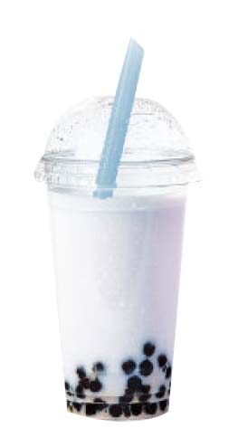
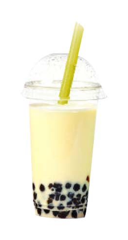
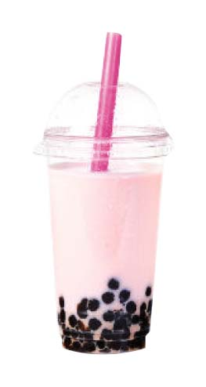
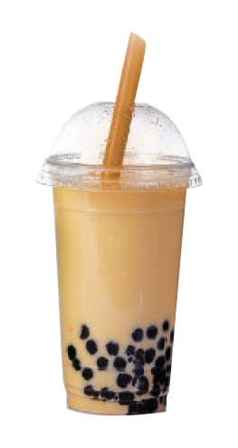
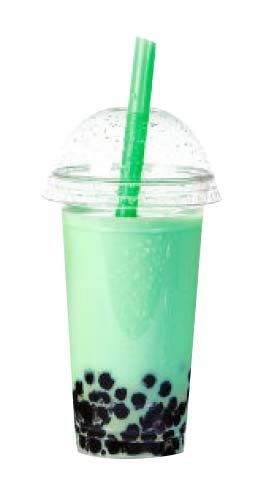

Colored Bubble Tea
MENU
PURPLE
YELLOW
PINK
BROWN
GREEN

Purple represent the future, the imagination and dreams, while spiritually calming the emotions. They inspire and enhance psychic ability and spiritual enlightenment, while, at the same time, keeping us grounded.
FLAVOR:TARO

Yellow helps with decision making as it relates to clarity of thought and ideas, although it can often be impulsive. Yellow helps us focus, study and recall information, useful during exam time.
FLAVOR:TARO

The color pink represents the sweetness and innocence of the child in all of us. It is the color of uncomplicated emotions, inexperience and naivete. A constant and exclusive use of pink can often lead you to become immature, silly and girlish, abandoning your adult responsibilities.
FLAVOR:STRABERRY

Brown suppresses the emotions, creating a safe haven from the stresses of the outside world within which problems can be contemplated and solved.
FLAVOR:COFFEE MILK MIX

Green is associated with nature, health and healing, and the environment, creating a sense of compassion and nurturing for all. It encourages generosity, kindness and sympathy.
FLAVOR:GREEN TEA MIX